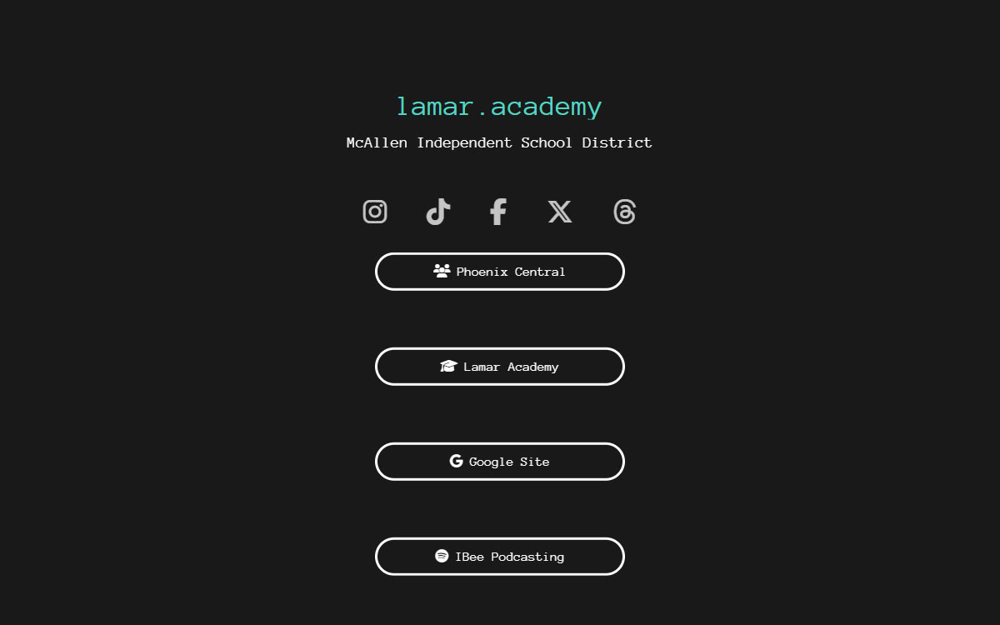

the idea
My school's online presence was scattered: a newsletter on one platform, an official district page, a google site, a student podcast on spotify, and five social accounts. So i registered lamar.academy — the school's name happens to be a real top-level domain, which is the kind of coincidence you don't waste — and built the one page that holds everything: a typewriter-animated header, the social row, and link bubbles under the phoenix.

the craft
Deliberately no-framework: one html file, hand-written css, a pure-css typewriter animation, and OG meta tags in the school's colors so the domain unfurled nicely wherever it was pasted. It started on classic shared hosting — the repo's deleted 404.shtml is the fossil — and ended up on github pages behind the custom domain.
For a while the domain also carried personal pages for me and two friends. Those got cleaned out in december 2023; the school kept the front page.
the ending
Eventually the registration lapsed, and today lamar.academy belongs to a beauty clinic in london. The page outlived my ownership of the url — which feels like the correct ending for a domain i registered in high school.
The page itself refused to die, though: it's rehosted on github pages at a url i do own — aaronca.no/lamar.academy.
stack
- site
- Static html/css, font awesome icons, css typewriter animation, OG/meta tags.
- hosting
- Shared hosting first, then github pages + the custom domain.
- status
- The original domain is someone else's now, but the page lives on at aaronca.no/lamar.academy.